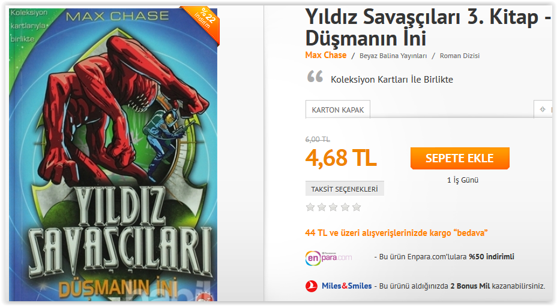
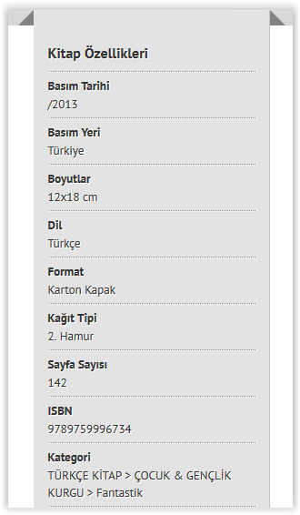
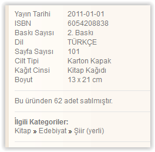

- Group Members:
Mikail Ceren: He mostly worked on scrapy and importing data to database. Also He helped highcharts.
Caner Demir: He mostly worked on highcharts and importing data to database. Also He helped scrapy.
- Description: The aim of the project is to help people choosing books. The project will include many books and aggregate books' information and their short summary scraping from different web sites.
- We have 3 database table to keep our data.
authors table:
- name: it holds author's name of all books.
genres table:
- genre: it holds books' genre types.
books table:
- title: it holds title of all books.
- summary: it holds short summary about books.
- yayınevi: it holds publishing houses.
- year: it holds publishing year of all books.
- img: it holds images about books.
- language: it holds images about books.
- price: it holds the price of all books.
- We scraped our data from kitapyurdu.com and babil.com. Here are some screenshots:



- STEPS FOR EXECUTING THIS PROJECT
Firstly you have unzip project.zip.
You should install python 2.7.8 using command line with this command: pip install python
You should execute MySQL-python-1.2.3.win-amd64-py2.7.exe in app folder.
You should install WampServer for PhpMyAdmin.
You should import web_mining.sql to PhpMyAdmin. It exist in app folder. Also you should arrange your password and username.
Now you can execute project.py using command line with this command: python project.py. It exist in app folder.
**If you want to extract more data from site
You should install scrapy 0.24.5 using command line with this command: pip install scrapy
You should go to Book or Babil folders and execute spiders command line with this command: scrapy crawl SelectBook/Babilden
You should install highcharts files from HighCharts